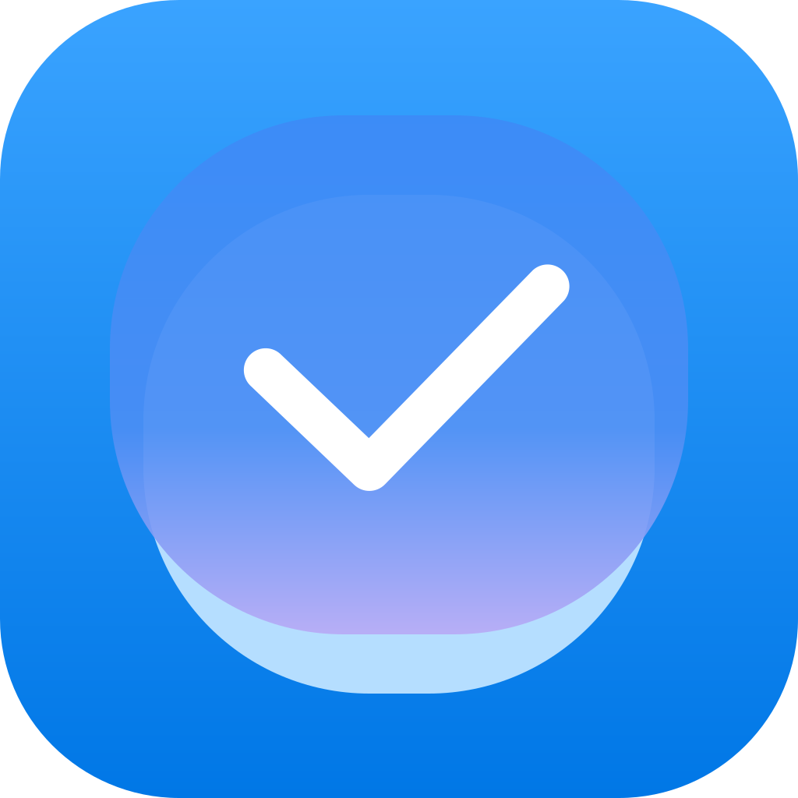

Tasks
Google Tasks on your Mac, and in Claude.
Mac menu bar app
A checkmark in the menu bar with a count of what's due. Quick add understands dates like "pay rent friday". A full window for lists, subtasks, search and completed tasks.
Claude connector
Lets Claude see what's due today or overdue, tick tasks off, add new ones and edit them. It can't delete anything.
How it works
Both parts sign in with your Google account and talk directly to the Google Tasks API. Your tasks stay in Google Tasks. Neither part keeps its own copy of them.
Who can use it
This is a personal project. The hosted connector is invite-only: it accepts Google accounts the developer has added. The code is open source under the MIT license, so anyone can run their own copy with their own Google Cloud project.
Not affiliated with Google
Tasks is an independent project. It isn't made, endorsed or reviewed by Google, Apple or Anthropic. Google Tasks is a trademark of Google LLC.